1: Stå på dit dashbord i Github. Klik på dit billede i øverste højre hjørne
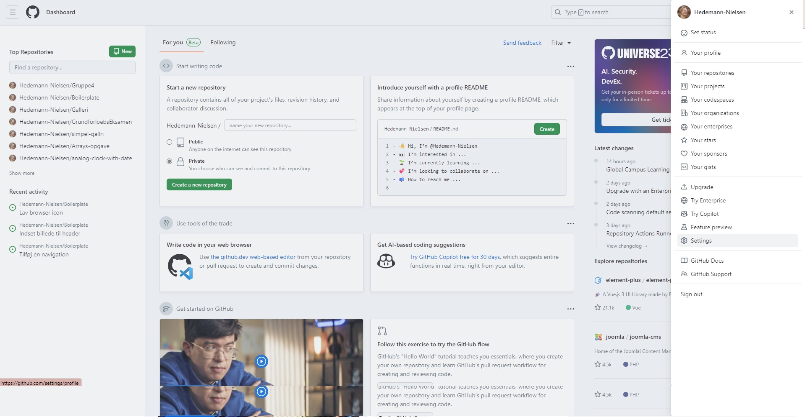
2: Der kommer en menu frem i højre side, her klikker du på Settings
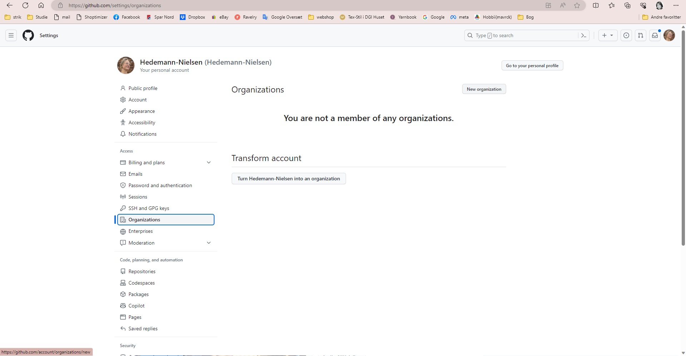
3: På næste skærmbidde kommer der en menu frem i højre side, her klikker du på Organizations
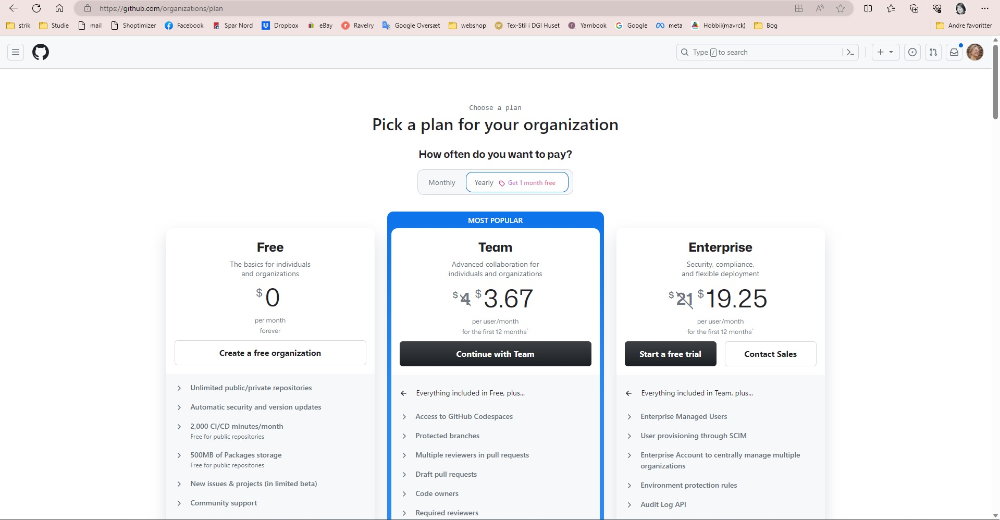
4: Fra dette skærmbillede kan du transformere din profil til en organization eller oprette en ny
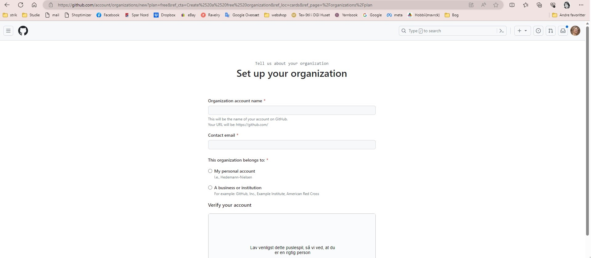
5: Hvis du trykker på "new organization" (Ny organization) kommer et billede frem hvor du skal vælge en betalings plan for din organization, her kan du vælge en gratis organization.
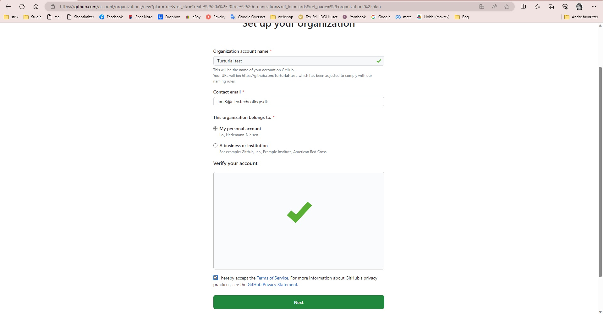
6: I dette billede indtaster du navnet på din organization, en e-mail samt vælger hvem som skal eje organizationen. Vertificer til sidst din konto inden du trykker på "next".
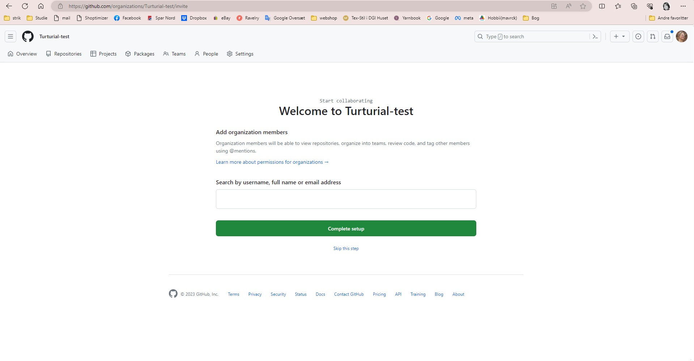
7: Her kan du tilføje medlemmere til din organization. Når du er færdig trykker du på Complete setup
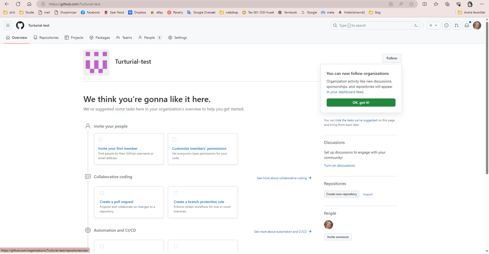
8: Nu er din organization oprettet og du kan nu oprette et repositorie i midten af skærmen til højre. Lige under denne knap kan du tilføje flere medlemmere til din organization
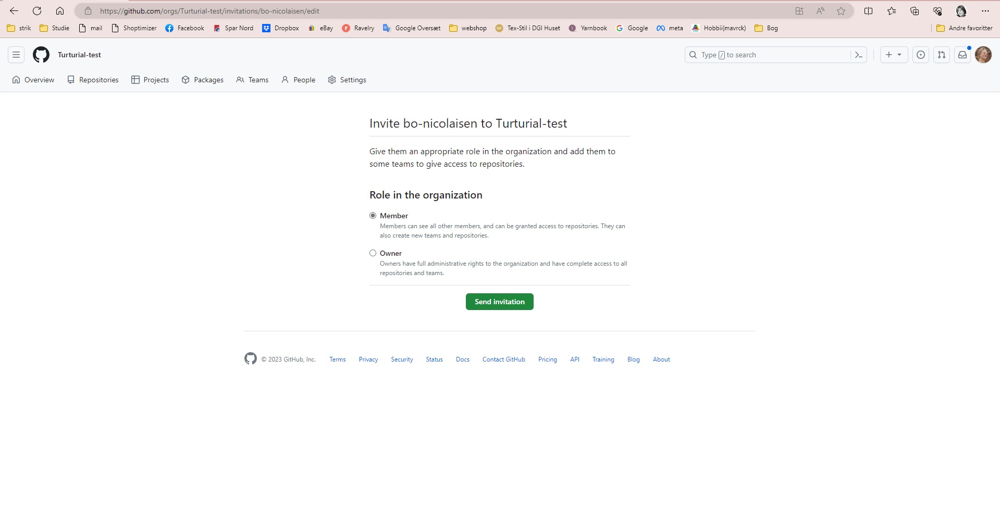
9: Hvis du invitere et nyt medlem får du mulighed for at vælge om den inviterede skal være medlem eller ejer af organizationen. Tryk til sidst på "Send invitation".
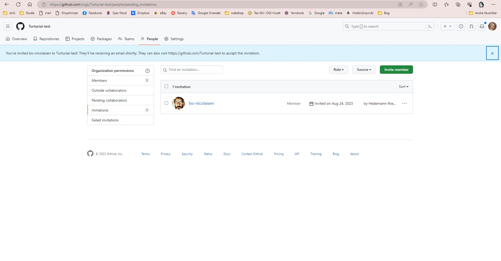
10: Når du har inviteret et medlem kommer en side frem hvorfra du kan se alle medelmmere af organizationen, deres rolle og invitere flere medlemmere.
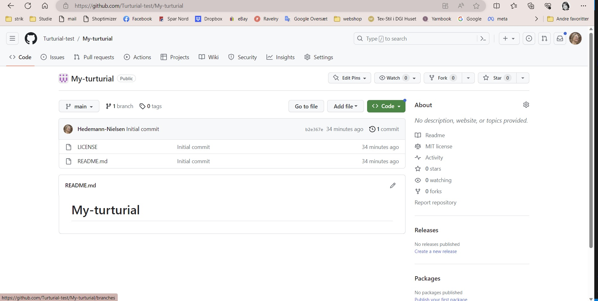
11: Et nyt repo i en organization ejes af organizationen.
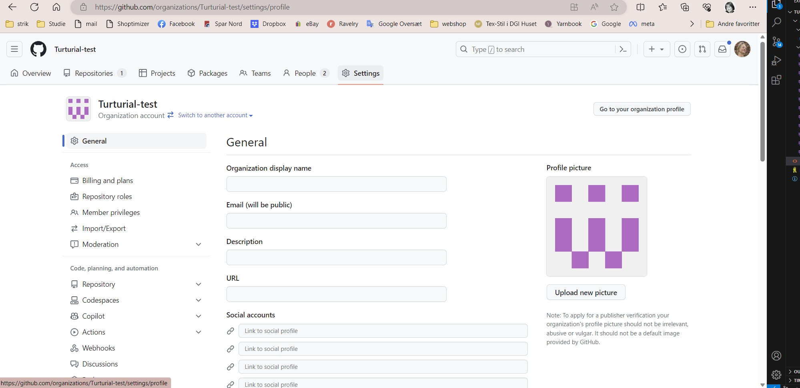
12: En organization kan lukkes på samme måde som et repo slettes.
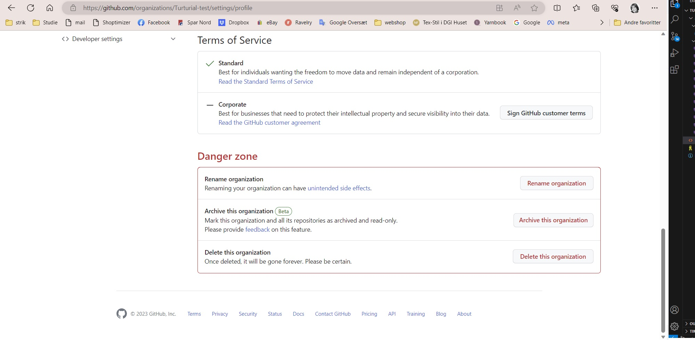
13: Stå i fanen for din organisation og tryk på settings fanen. Scroll ned i bunden til "danger zone". Tryk på slet organisation.